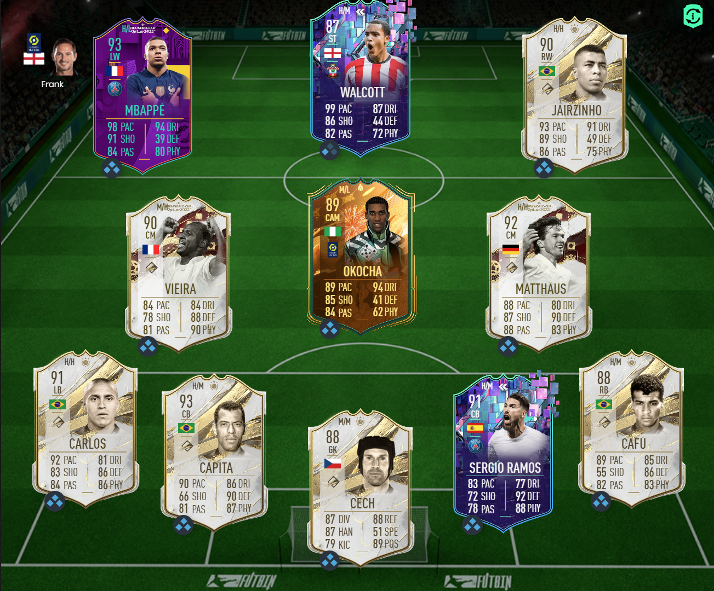

Here is a link to Theo Walcott's card on futbin:Futbin
In game I play a 4321 with similar tactics to many pros. He plays as a Left-Forward on come back on defense and stay wide. His role in the his role in the team is to just pace down the wing and sweat it across or score easy finshes so his lack of shooting and 3 star weak foot won't be a weakness
Here is the team he played in:
Pros and cons list:
- Pros:
- 99 pace
- decent dribbling
- 4 star skills
- flair and outside foot shot traits
- Cons:
- 3 star weak foot
- passing could be better
- injury prone
- price